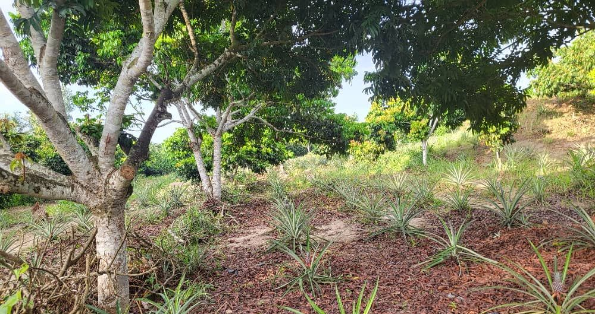

Come to Ibenga, see it with your own eyes.
The farm welcomes visitors, students and people starting a project. You walk the plantation, watch the pressing, taste.
A day on the farm.
An example of a day, adjusted to the season and to what you come for.

The estate track · April 2025
Morning
The plantation
Oil palms, cocoa trees, safou trees, apiaries at the forest edge. You walk, you pick, we explain what grows and when.

Cocoa drying
Midday
The workshop
Cocoa drying, oil pressing, depending on the season. You watch, you smell, you understand why it is done here.

The river · January 2018
Evening
The river
The loading of the pirogues, the village. You taste what you saw growing.

Village in the Likouala · January 2018
Getting there, staying.
- From Brazzaville[ flight to Impfondo, to be confirmed ]
- From Impfondo[ road or river · duration to be provided ]
- Accommodation[ in the village or at Enyellé, to be confirmed ]
- Recommended season[ month to be confirmed ]
- Formalities[ to be specified ]
Day visits, stays, training.
Three formats, arranged on request. Write to us to build yours.
- The visitOne day · Price on request
- The three-day stayThree days · Price on request
- The trainingCocoa or beekeeping · Price on request